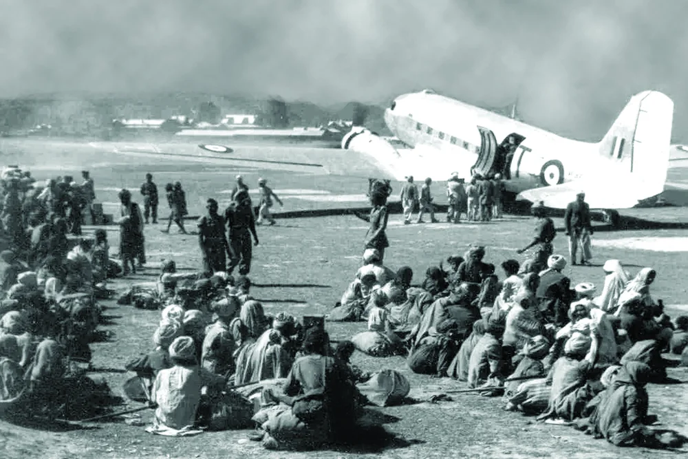
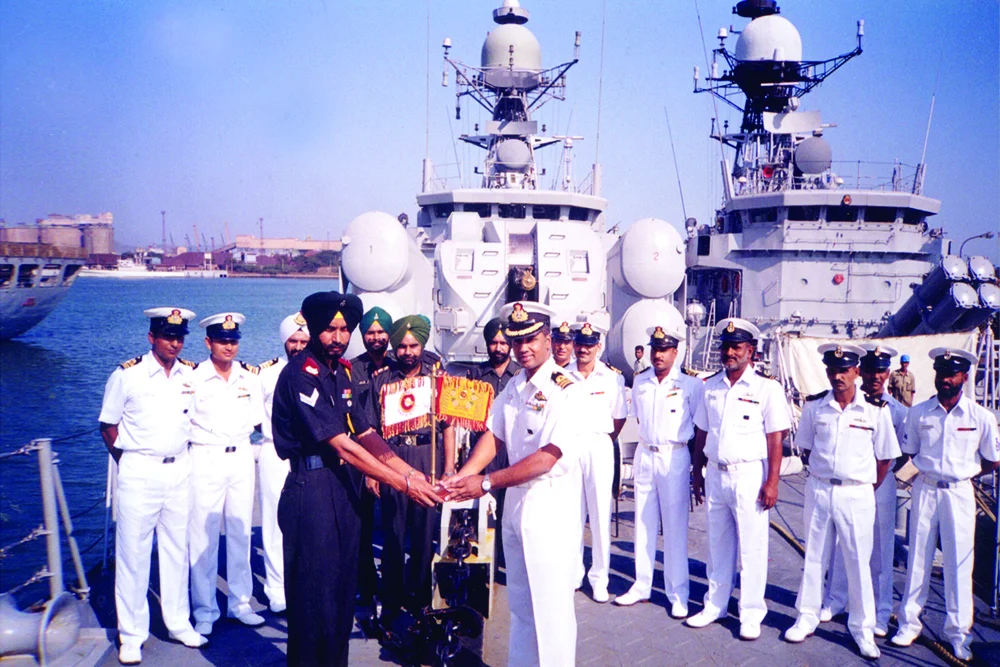
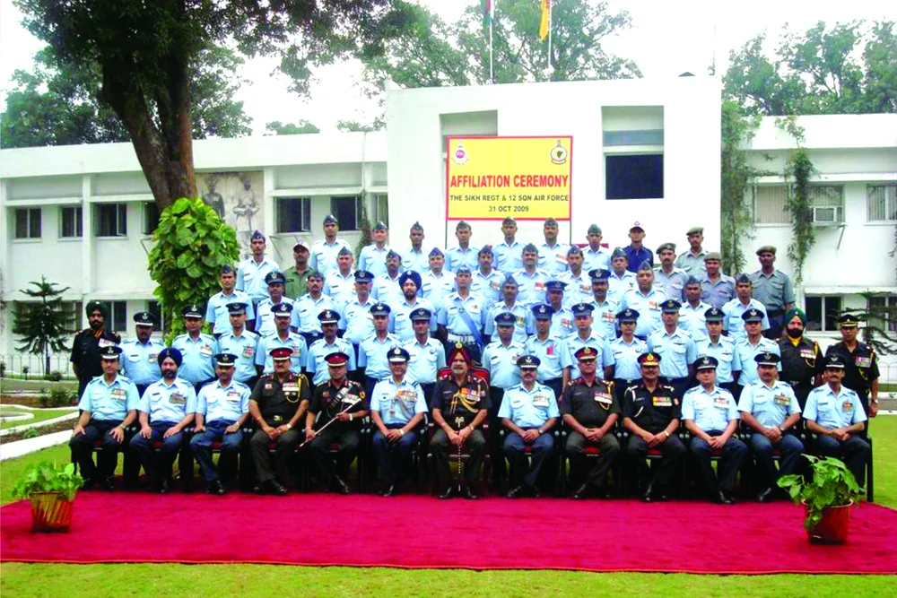
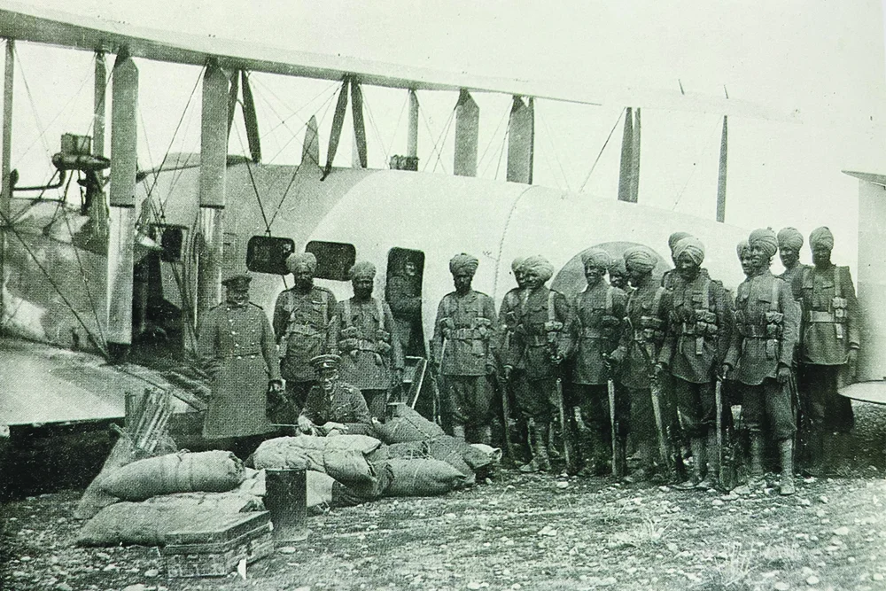
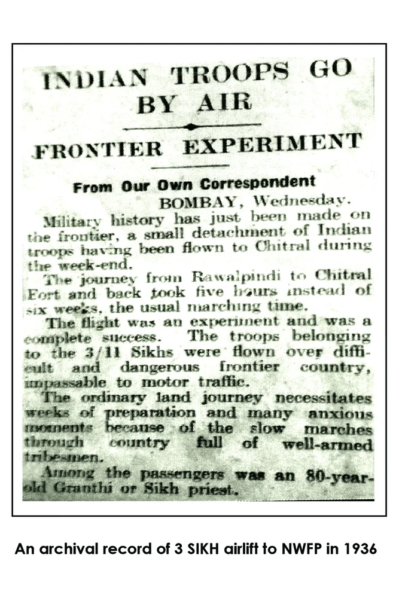
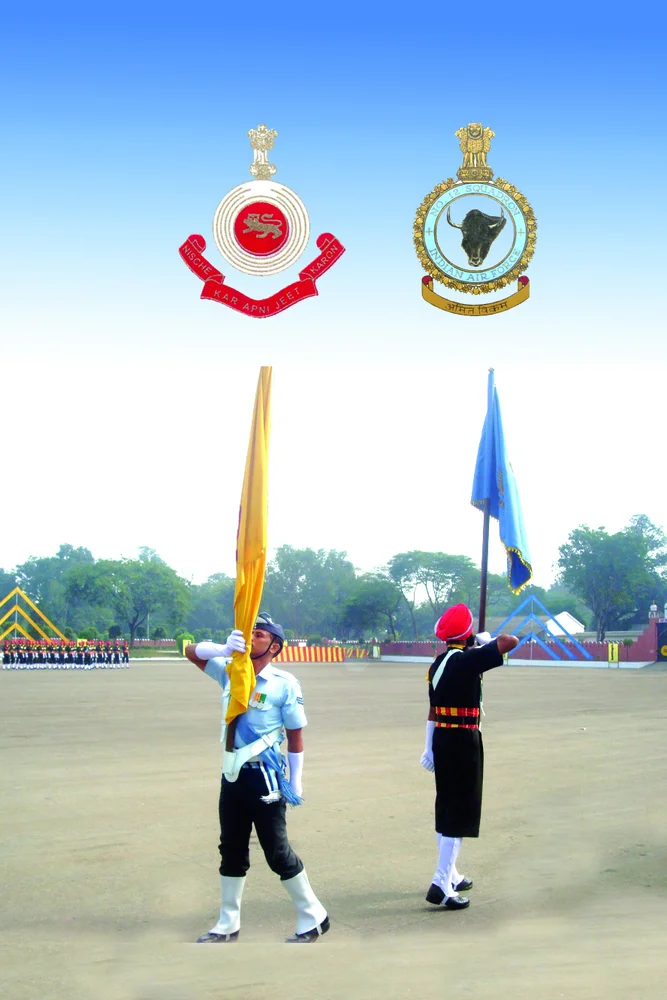
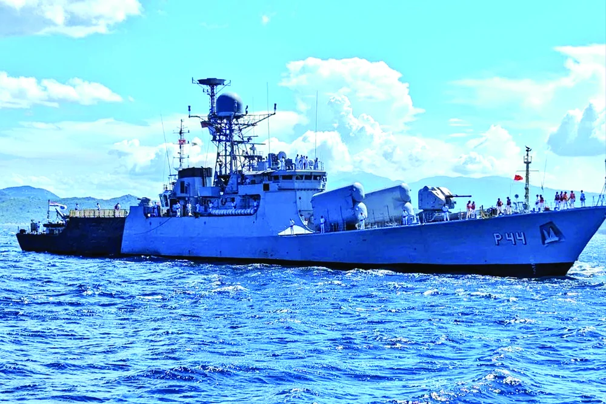
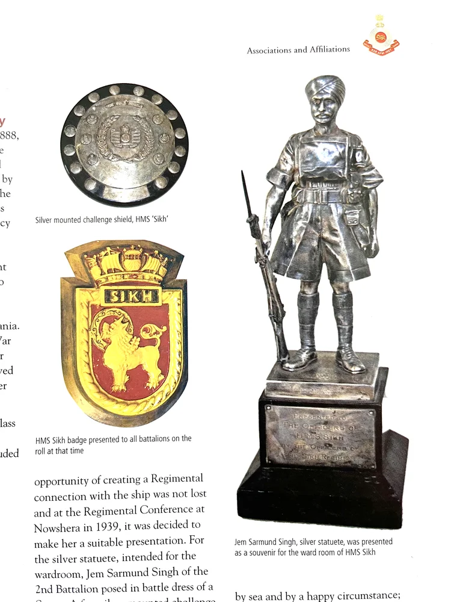
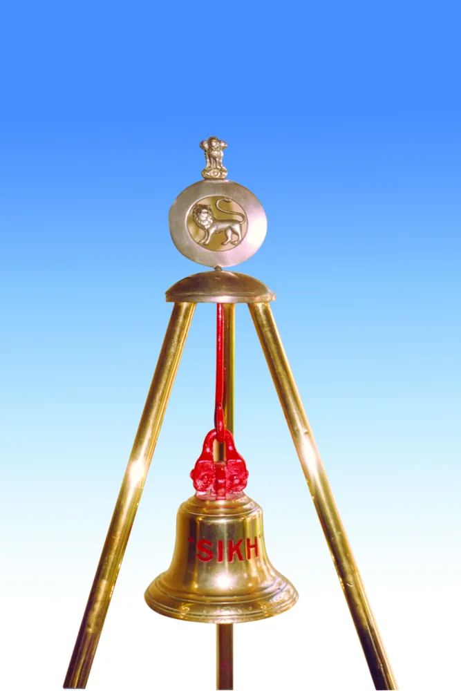
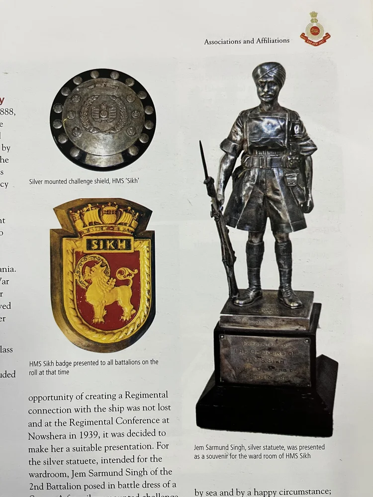

जल और नभ में अटूट बंधन










श्रेणी: जंगी मैदान से परे
कलाकार: सिख रेजिमेंटल सेंटर
वर्ष: ऐतिहासिक
नौसेना के साथ सिख रेजिमेंट का ऐतिहासिक संबंध 1888 से है, जब रॉयल इंडियन मरीन के लिए काउज़ में बनाई गई एक टारपीडो नाव को 'द सिख' नाम दिया गया था। 1914 में 'द सिख' नाम का एक और जहाज बनाया जा रहा था जो प्रथम विश्व युद्ध शुरू होने के कारण पूरा नहीं हो सका। एक तिहाई 'एचएमएस सिख' नाम का रॉयल नेवी जहाज 1939 में बनाया गया था, जिसने द्वितीय विश्व युद्ध में सक्रिय रूप से भाग लिया था और 14 सितंबर 1942 को टोब्रुक के पास भूमध्य सागर में डूब गया था। जहाज का एक लकड़ी का मॉडल गैलरी में प्रदर्शित किया गया है। मार्च 2000 में 10वें युद्धोत्तर पुनर्मिलन के दौरान, 'आईएनएस किरपान', ए खुकरी-क्लास मिसाइल कार्वेट को 1991 में भारतीय नौसेना में शामिल किया गया था, जो औपचारिक रूप से सिख रेजिमेंट से संबद्ध था। जहाज को 22 जुलाई 2023 को सेवामुक्त कर दिया गया और वियतनाम नौसेना को उपहार में दे दिया गया, यह भारत द्वारा किसी अन्य देश को उपहार में दिया गया पहला सक्रिय सेवा युद्धपोत बन गया।
वायु सेना के साथ रेजिमेंट की संबद्धता 1922 से चली आ रही है, जब 1 सिख को इराक में कुर्द जनजातियों के खिलाफ ऑपरेशन के लिए एयरलिफ्ट किया गया था। यह पहला अवसर था जब भारतीय सैनिकों को युद्ध में उतारा गया। 1936 में, रावलपिंडी स्थित 3 सिखों की एक कंपनी को हवाई जहाज़ से चित्राल ले जाया गया। सीमा पर ऑपरेशन. स्वतंत्र भारत में, 27 अक्टूबर 1947 को 1 सिख को 12 स्क्वाड्रन, आरआईएएफ के सी-47 डकोटा में सफदरजंग से श्रीनगर ले जाया गया था। इस ऐतिहासिक उपलब्धि की याद में हर साल इन्फैंट्री दिवस मनाया जाता है जिसने कश्मीर को पाकिस्तान के हमलावर आदिवासी मिलिशिया से बचाया था। स्क्वाड्रन को औपचारिक रूप से 31 अक्टूबर 2009 को सिख रेजिमेंटल सेंटर, रामगढ़ में सिख रेजिमेंट के साथ संबद्ध किया गया था। अन्य ऑपरेशनल एयरलिफ्ट में 1962 में 4 सिखों को वालोंग के लिए एयरलिफ्ट करना और भारत-चीन युद्ध के दौरान 16 सिखों को नेफा के लिए उड़ान भरना शामिल है। 1999 में कारगिल युद्ध के दौरान 14 सिखों को भारतीय वायुसेना में शामिल किया गया था चंडीगढ़ से लेह सेक्टर तक.

मोबाइल पर खोलें
अपने फोन पर इस कलाकृति को देखने के लिए स्कैन करें।